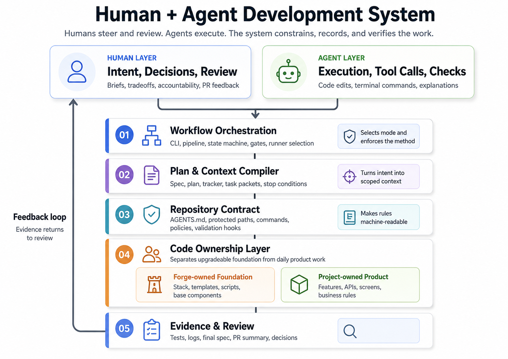
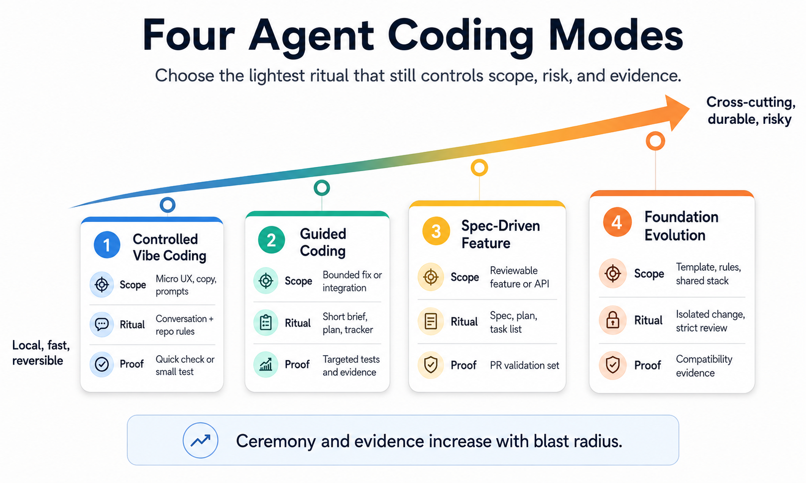

From Vibe Coding to Verifiable Agentic Development¶
Vibe coding has shown that intent expressed in natural language can become a development interface. But to produce maintainable software, alone or in a team, you need more than a conversation with an agent: you need an agent-ready repository, a workflow that applies the rules, a plan that compiles the useful context, and evidence that makes the work reviewable.
AI-assisted software development is often described as an individual loop: a developer describes what they want, the agent modifies the codebase, and the human corrects or approves the result. This loop explains the rise of vibe coding: intent expressed in natural language becomes a direct interface with the software system.
But software is not developed only inside a conversation. It is developed inside a repository, with an architecture, conventions, dependencies, scripts, tests, commits, and technical memory. In a team, the repository is shared, pull requests need to be reviewed, security rules need to be respected, and decisions need to survive individual conversations.
When coding agents enter this system, the real question is no longer: “What prompt should we write?” The real question is: what system should the agent work within?
The point of AI agent-based coding is not to make the conversation with the agent longer. It is to better design the system that guides, limits, and verifies it.
This article proposes a simple method: make the repository agent-ready, apply the rules through a workflow, turn the plan into execution context, and produce evidence that makes the work reviewable.
Vibe coding and spec-driven development: two useful but incomplete answers¶
Vibe coding revealed something important: part of software is discovered through trial, observation, correction, and conversation. This is especially true for prototypes, interface details, UX adjustments, workflow explorations, and quick fixes. Recent research describes this practice as a form of conversational co-creation with AI, connected to flow and experimentation, but also exposed to weaknesses: imprecise intent, variable reliability, difficult debugging, and context drift. (arXiv)
So vibe coding should not be caricatured. Its value comes from its speed: it reduces the friction between “I have an idea” and “I can see something working.” But that speed has a cost. A literature review describes a speed-quality paradox: users are attracted by speed and accessibility, while often perceiving the generated code as imperfect, with QA practices frequently neglected. (arXiv)
Spec-driven development addresses part of this problem. GitHub introduced Spec Kit as an open source toolkit for structuring coding-agent workflows around specification, planning, task breakdown, and implementation. (The GitHub Blog) Its documentation places the specification at the center of AI-assisted development: you describe what needs to be built, refine the intent, and then the agent implements it. (GitHub Pages)
This approach stabilizes intent: user problem, expected outcome, business rules, interactions, and success criteria. But it should not become universal. A spec consumes time, context, tokens, review, and attention. It can be disproportionate for a local fix or a fast iteration.
Vibe coding provides speed. Spec-driven development provides stability. Neither one, taken alone, provides a development system.
Vibe coding without boundaries creates debt. Spec-driven development applied everywhere creates bureaucracy.
The right answer is therefore to calibrate the level of structure according to the actual risk of the change, then make that structure live in the repository, the workflow, the plan, and the evidence.
The agent-ready repository: the template project as execution contract¶
The first building block of an industrializable AI-native development practice is not the prompt. It is the repository.
A coding agent should not enter an undefined space. It should enter an environment that clearly states where to code, how to code, what to reuse, what not to modify, how to validate, how to prove, and when to stop.
An agent-ready repository is not just a well-documented repository. It is a repository whose human conventions have become actionable by agents: an executable template, a stack decided by the team, standard scripts, extension points, protected zones, reusable patterns, validation commands, and operational documentation.
A template project is therefore not just a starter kit. It is the agent’s execution contract. It defines the technical choices the agent no longer has to reinvent: project structure, frontend and backend architecture, naming conventions, approved libraries, design system, testing strategy, security rules, and extension points.
Without this contract, the agent optimizes locally. It adds a dependency because it seems convenient. It recreates an existing component because it did not find it. It fixes a business request by modifying a technical primitive. It produces functional code, but code that is hard to maintain inside the team’s real system.
Instruction files for agents are useful, but they are not sufficient. AGENTS.md provides a predictable place to put setup commands, conventions, testing rules, or PR expectations, and Codex also documents the use of these files. But these files should not become encyclopedias. Recent work on context files shows that they can increase cost and sometimes reduce success rates when they add too many unnecessary requirements. The right direction is therefore not “more instructions,” but “shorter, more reliable instructions applied by the workflow.” (AGENTS.md) (OpenAI Developers) (arXiv)
Agent docs describe the rules. The workflow applies them. The plan carries them into the execution context.
In a monorepo, the agent can see the frontend, backend, mobile app, SDK, data layer, infrastructure, scripts, and shared libraries. This visibility is useful, but it increases the risk of out-of-scope modifications. An agent-ready monorepo must therefore allow the agent to understand the whole system without giving it the same freedom everywhere.
Separating the technical foundation from product code¶
The separation between the technical foundation and product code becomes a central principle of AI-native development.
If an agent can freely modify UI primitives, scripts, configuration, repository rules, base components, and business features without distinction, every product request can turn into platform debt.
Two zones must therefore be distinguished.
The first is the foundation layer. It contains the project structure, conventions, base components, configuration, scripts, CLI workflows, agent rules, validation mechanisms, reusable capabilities, and technical documentation. This layer changes less often, with stronger control.
The second is the product layer. It contains business features, specific screens, application domains, product APIs, business models, business prompts, business rules, product documentation, and feature specifications. This is the main area for day-to-day agent work.
The rule should be simple:
If a change can be made in the product layer, it should not be made in the foundation layer.
This separation protects the architecture and keeps the foundation upgradeable. A template or technical foundation can only evolve cleanly if the team still knows which files belong to the framework and which files belong to the product.
This is the kind of boundary an AI-native development system must materialize: a clean, testable, documented, and upgradeable full-stack foundation, with a strict separation between foundation-owned and project-owned paths, a machine-readable contract, validations, evidence, and a durable workflow independent of chat memory.

Four intervention modes to calibrate the level of ceremony¶
The opposite mistake would be to respond to the chaos of vibe coding with generalized bureaucracy. If every micro-change becomes a full spec, a team will kill the speed that makes agents useful.
An AI-native method must calibrate the level of structure according to the actual impact of the change. I distinguish four development modes.
Foundation evolution covers changes to the foundation: template, shared capability, design system, backend architecture, agent rules, CLI workflow, or validation scripts. This mode is risky because it changes the rules inside which agents will code tomorrow. The foundation is often shared across several projects; it should therefore be isolated, versioned, and reviewed with more attention.
Changing the foundation means changing the rules according to which agents will code the next features.
Spec-driven feature covers significant features: business workflow, new API, full page, integration between several components, AI processing inside a pipeline, or mobile, data, or infrastructure capability. Here, the specification stabilizes intent before execution. When the feature is complex, it is better to iterate on the specification than on the code.
Guided coding covers bounded but non-trivial needs: connecting backend data, adding an option, fixing a reproducible bug, or adjusting an existing AI flow. You do not launch a full specification mechanism, but you do produce a short plan, a tracker, clean context, and targeted validation.
Guided coding is the mode of the short brief, the short plan, and controlled execution.
Controlled vibe coding remains appropriate for micro-adjustments: label, button, empty state, visual variant, color using existing tokens, or business prompt. The conversation keeps its value, but the scope must remain local, reversible, and subject to repository rules.
Vibe coding keeps its value when it remains local, reversible, and subject to repository rules.

These modes form a scale. The more cross-cutting, durable, or risky a change is, the more it should move toward structured modes. The more local, observable, and reversible it is, the more it can move toward lighter modes. The right unit of work remains the reviewable feature: one branch, one PR, a readable intent, a bounded scope, validations, and evidence. If the need does not fit into a branch and a readable PR, the workflow should not be made more complex. The need should be split.
An AI-native method does not impose the same ceremony on every task. It applies the right level of ceremony to each type of change.
The plan as context compiler¶
The repository imposes the structure and rules of the project. The specification stabilizes intent when the change justifies it. One more operational question remains: how do we make agents respect all of this at execution time?
The main issue in AI-native development is not prompt engineering. It is context engineering: selecting, compressing, and organizing what the agent sees, instead of piling more and more information into the context window. Martin Fowler and Thoughtworks also describe this evolution as a central issue for coding agents. (Martin Fowler)
An agent should not reread the whole repository for every task. It should not receive a massive dump of documentation, files, conventions, and conversation fragments. It should receive the right context at the right time.
This is where the development plan changes nature. It should not be a simple checklist. It should also become a context compiler: on one side, the workflow context — chosen mode, mandatory steps, tracker, validations, evidence, stop conditions, recovery rules — and on the other side, the repository context — relevant architecture, allowed paths, protected paths, patterns to reuse, existing components, test conventions, and validation commands.
This logic reflects a broader trend in coding-agent tools. In its analysis of the Codex agent loop, OpenAI describes the harness as the orchestration layer between the user, the model, and the tools used to produce real software work. (OpenAI) Codex Skills follow the same direction through a progressive disclosure logic. (OpenAI Developers)
The right agentic context is not a summary of the repository. It is a mission order derived from the plan.
A task packet should contain only what the agent needs to execute a task: objective, scope, allowed paths, forbidden paths, likely files involved, patterns to reuse, validation commands, completion criteria, stop conditions, and expected evidence.
Work on Spec Kit Agents points to the same problem from another angle: in large repositories, agents easily become context blind, hallucinate APIs, or violate architectural constraints. Their answer is to add grounding and validation hooks to each phase of the workflow. (arXiv)
The plan turns the project’s general rules into specific context for agentic execution.
Workflow and evidence: making agentic execution reviewable¶
We should not ask an agent to remember the whole method for several hours. The workflow must belong to the development system: a CLI, a local orchestrator, a pipeline, or scripts.
The agent executes. The system orchestrates and verifies.
This distinction is decisive. An agent can propose a plan, modify code, run commands, explain its decisions, and produce a summary. But it should not be the only judge of its own execution. It can forget a step, declare completion too early, fail to run tests, modify a forbidden area, or produce a summary that is more optimistic than reality.
A CLI workflow should therefore create the work unit, select the development mode, record the brief, produce the plan, create the tracker, compile task packets, call the agentic runner, inspect modified files, check forbidden paths, run or request validations, record evidence, and prepare the PR summary. Codex CLI illustrates the possible role of a local runner, but the runner should not carry the entire method: agents may change; the repository and the workflow should remain. (OpenAI Developers)
This is also the meaning of harness engineering: treating the repository as a structured knowledge system, giving the agent a map rather than a thousand-page manual, and placing the rules in an environment the workflow can use. (OpenAI)
The model can change. The repository and the workflow remain. The method must therefore belong to the development system, not to the model.
In this framework, evidence becomes a development artifact. It is not limited to test logs or command outputs. It connects the initial intent, the execution plan, the completed tasks, the validations obtained, and the behavior actually delivered.
A feature may begin with a full specification, a short guided-coding plan, or a controlled conversational patch. But at merge time, it should close with a clear trace: what was requested, what was planned, what was done, what changed along the way, what was validated, and what is finally delivered.
In a spec-driven process, the initial specification expresses the starting intent. The final specification should describe the product actually delivered: not the ideal spec from the beginning, but an accurate description of the merged system.
This logic does not replace Git. It strengthens it. GitHub describes pull requests as a central collaboration mechanism for proposing, discussing, and reviewing changes before merge. (GitHub Docs) In an AI-native workflow, the branch becomes the execution space, and the PR becomes the convergence point between code, plan, evidence, decisions, validations, and final specification.
The plan carries the context. The tracker carries the state. The prompt triggers execution. An agentic task should be situated in a plan, a phase, a branch, a tracking file, a scope, and expected validations. This trace is what makes the work auditable, recoverable, and reviewable.
AI-native development should not only produce code. It should produce the verifiable memory of its own execution. This idea aligns with recent work that formalizes the shift from vibe coding to verified engineering as a process-control problem: specifying, constraining, orchestrating, proving, and verifying, rather than merely improving prompts. (arXiv)
Granularity as an economic parameter¶
Once the repository, workflow, plan, and evidence are in place, the real optimization variable becomes the size of the work batch.
In spec-driven approaches, task size is not only a methodological question. It is an economic question.
A task that is too small is costly in context, orchestration, validation, and recovery. A task that is too large increases the risk of drift, unreadable diffs, hidden debt, and impossible review.
The right batch should be broad enough to amortize context cost, coherent enough to remain within one intent, bounded enough to fit into a PR, and verifiable enough to produce solid evidence.
Too large: “rewrite the whole application, add permissions, change the design system, and migrate the database.”
Too small: “create the empty file for the filter button component.”
Good granularity: “implement the customer list with API loading, empty/error/loading states, pagination, and rendering tests, using the existing components.”
Granularity becomes the central economic parameter because it determines token cost, time cost, validation cost, human review cost, divergence risk, cognitive fatigue, recovery cost, and integration cost.
Granularity is the central economic parameter of development with agents.
There is a lot of discussion about model quality, context-window size, prompts, or the choice between agents and IDEs. But a team can lose a large part of the value of agents simply because it slices the work poorly. The right slice corresponds to a unit that the agent can execute, the system can validate, and a human can review.
Industrializing without bureaucratizing¶
Moving toward industrial AI-native development does not mean claiming that agents will write all software tomorrow. It means defining a simple method for working with them without losing control of the code.
This method has four building blocks: the repository carries the rules, the workflow applies them, the plan turns intent into execution context, and the evidence makes the work reviewable.
This framework does not oppose vibe coding. It puts it back in its proper place. Teams should be able to prototype quickly, fix locally, adjust an interface, or explore an idea without producing a full spec. But as soon as a change becomes durable, cross-cutting, or difficult to review, it should move toward a more structured mode: guided coding, spec-driven feature, or foundation evolution.
This is not contradictory to the agile spirit: preserving speed and adapting to change, without confusing lightness with the absence of method. (Manifesto for Agile Software Development)
At this level, the prompt remains useful, but it is no longer the center of the system. The prompt expresses the intent of the moment. The repository carries the rules. The plan compiles the useful context. The workflow orchestrates, controls, and records. Evidence makes it possible to review, resume, and maintain.
This is what it means to industrialize AI agent-based coding: no longer treating the agent as an isolated conversation partner, but as a powerful contributor inserted into a simple, verifiable, and shareable working method.
References¶
- Good Vibrations? A Qualitative Study of Co-Creation, Communication, Flow, and Trust in Vibe Coding
- Vibe Coding in Practice: Motivations, Challenges, and a Future Outlook — a Grey Literature Review
- Spec-driven development with AI: Get started with a new open source toolkit
- Spec Kit Documentation
- github/spec-kit
- Unrolling the Codex agent loop
- Agent Skills — Codex
- Codex CLI
- About pull requests
- Manifesto for Agile Software Development
- AGENTS.md
- Custom instructions with AGENTS.md — Codex
- Evaluating AGENTS.md: Are Repository-Level Context Files Helpful for Coding Agents?
- Harness engineering: leveraging Codex in an agent-first world
- Context Engineering for Coding Agents
- Agentic Agile-V: From Vibe Coding to Verified Engineering in Software and Hardware Development
- Spec Kit Agents: Context-Grounded Agentic Workflows